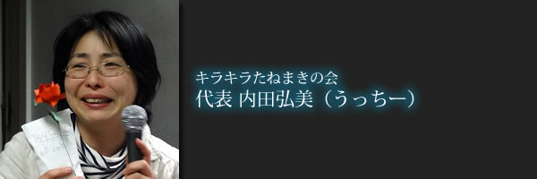

 映画『ゆずり葉』は、聴覚障害者の方のお話ですが、すべての人が共感できるお話だと思います。 障がいとは関係なく、身近な当たり前の生活の中のひとつひとつの事が、先人の努力の上に受け継がれた贈り物である事を思い起こさせてくれます。 私たちの大切な友人仲間である、にぽぽさん。 彼が生前いのちに替えても上映会をやりたいと仲間に言っていた『ゆずり葉』。 それは、全ての人が認めあえる世界を目指して様々な活動をしてきた彼の思いと、数々の困難な経験を乗り越えてきた彼の大きさを感じるものでもありました。 共感した私達は彼をリーダーに上映会をやる事を楽しみにしていました。 彼の深い優しさ、優れた統率力、誠実で真っ直ぐな思いは、 みんなの心を引っ張り、仲間から愛され、一緒に歩みたいと思わせる 信頼の厚い、真のリーダーでした。 しかし思いを仲間に託すようにして、彼自身がゆずり葉のように２月に天国に旅立ちました。 今回立ち上がったBe Smile Presentsのイベント『ゆずりは』は、にぽぽさんが関わり思いを共にする３つの団体が結成して行います。 その中の１つ、きらきら☆たねまきの会は、「知る」ことで世界は変わるということをコンセプトに活動をしています。 知ることは時に悲しいこともありますが、自分の中の世界を広げ、伸び伸びと自由に、動き回る領域と可能性を広げてくれます。 普段当たり前のようにある権利が、偏見や差別により当たり前でない人達がいる。 それが自分の身近な家族や大切な友人だったらどう思いますか？ 私たちは未来を作れる力を、1人1人が持っています。 私たちは1人1人違った個性をもち、誰1人完璧な人はいない。 １人で出来る事は限界がありますが、同じ想いの仲間が互いの違う個性を認め、生かし補い合いつながる事ことで１人ではできない事も実現化できると思うのです。 その最も大きな集合体が地球。 同じ種でも全く同じものは存在しない。 多様性にとんだ生物が、自然で微妙なバランスの元無駄一つなくいのちの連鎖をつづけている。 違いは生命が存続し、生きる為に必要であり互いを生かし支えあう脈々と受け継がれてきた個性。 全ての人が必要で大切な存在です。 全ての人が認めあえる世の中を目指し、様々な活動をしてきたにぽぽさんの思いは彼１人の思いではなく、たくさんの人に共通する思いでもあります。 そして、それをたくさんの方々と共に共感しあう為に、仲間に受け継がれたイベントが『ゆずりは』です。 ぜひあなたの大切な人と一緒にお越しいただきたいです。 あなた自身も大切で、ゆずり葉として存在する事も感じてもらいたい。 先にゆずり葉となり旅立った、にぽぽさんは今でも私たちの大切な友人であり、かけがえのないリーダーです。 きらきら☆たねまきの会 内田 弘美